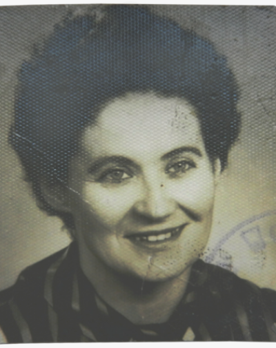

Window onto history
A wallet or a watch suddenly turns up out of the blue. And sometimes a
story that nobody knew anything about: What do
children and grandchildren feel when they hold
these memories in their hands?
Yves Stappers
Edmond Ameye’s grandson
Joop Will
Peter Will's son
Pater Hubert
Father Engelmar Unzeitig’s fellow priests
Teodor Buttler
Ilona Buttler's grandfather

Wiesława Brzyś
Wanda Jaronszyńska's mother